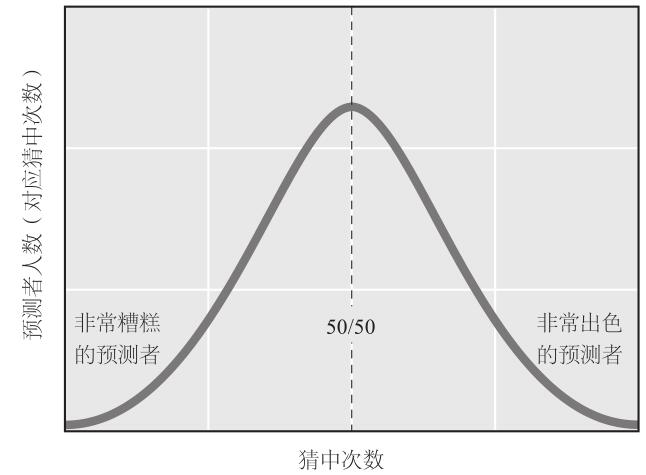
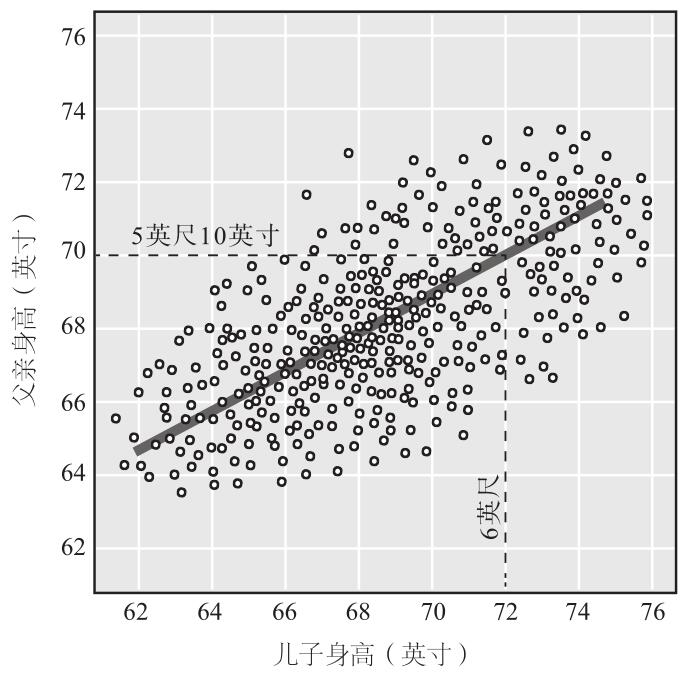
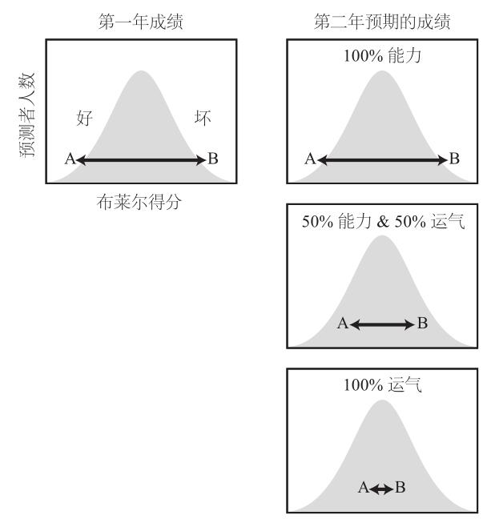

在这里摆出论点，就像我前面所做的那样，目的是为了让读者相信，但我希望你们还没有被这些超级预测家所折服，至少现在还没有。

假设我要求2800名志愿者全都来预测我将要抛掷的一枚硬币着地时哪一面朝上。他们预测完毕，然后我抛出硬币，并记录哪些人猜对了。我重复这个过程104（这是比赛第一年全部预测的数量）次。结果看起来像是典型的正态分布曲线。
大多数预测者猜中次数的比例为50%，曲线中段记录的就是他们。少数人的结果截然不同。其中有些人绝大多数时候都猜错了，他们位于曲线左段最远处；其他人正相反，他们位于右段最远处。从这些极端的结果中，我们对这些人的技能有了哪些了解呢？除非你相信超感官知觉（俗称第六感），否则答案是：我们什么也没有了解到。这些结果与任何技能无关。有人猜中了硬币哪一面朝上，但是，无论说中一次还是百次，都不代表他具有对抛硬币游戏的预测能力。这个游戏完全靠运气。毫无疑问，在104次预测中猜对70%需要十足的运气，如果只让一个人来做预测，这种运气基本上没有可能降临。可是，如果你有2800名掷硬币游戏的预测者，不太可能就会变成很有可能。
这并非复杂问题。但是，我们容易误解“随机性”这个词。我们对它没有直观感受。随机性是鼻尖视角观察不到的，只有超越自我才能看到它。
心理学家埃伦•兰格（Ellen Langer）通过一系列实验表明，我们对随机性的了解实在太少。在其中一个实验中，她邀请耶鲁大学学生参加猜硬币游戏：某人抛硬币，然后学生们预测硬币着地时哪一面朝上，一共做30次。学生看不到抛硬币的过程，但会被告知每一次的结果。不过，这些结果经过了处理：每名学生都会得到15次猜中、15次猜错的结果，部分学生前期得到的是一连串猜中的结果，而其他学生正好相反。随后兰格问学生们，如果重复这次实验，他们对自己的表现有何预期。首先得到猜中结果的学生对自己的能力评价更高，认为自己会再次表现出色。兰格称之为“对照的错觉”，也可以说是“预测的错觉”。现在，让我们想想这个实验的背景。这些学生来自一所精英大学，知道自己的智力将在一次典型的随机性实验中接受考验。如同兰格所述，我们可以预期他们会表现出“超级理性”。可是，他们遇到的第一种模式愚弄了他们，使其发自内心地相信，自己可以预测完全随机的结果。12
在耶鲁大学实验室外，这类错觉屡见不鲜。看看电视上的商业新闻，评论员出场时，主持人经常以前者一次相当成功的预测来介绍他，就像这样：“佩德罗•齐夫（Pedro Ziff）准确地预测了2008年经济大崩盘！”其意义在于让我们信任评论员，这样的话我们就想听听他们的新预测。可是，即使我们认为这些介绍真实地反映了该评论员的预测内容（通常是虚假的描述），但我们对这位嘉宾预测的准确性还是几乎一无所知，只要观众稍微运用第二系统想想就能发现这一点。要知道，一只掷飞镖的黑猩猩掷出足够多的飞镖，也能偶尔击中靶心；任何人只要不断地警告股票市场将会崩盘，就能很容易地“预测”出下一次股灾何时发生。可是，仍然有许多人对这种空洞的预言非常重视。
这类谬误的另一种表现方式是单独选出某个成就非凡的人，然后向公众表明，这个人的预测记录能做到这么出色，是一个极小概率事件，所以结论是，运气不足以解释他的成就。这种现象经常出现在华尔街的新闻报道中。例如，某人的操作连续六七年强于市场平均水平，记者介绍完这位优秀的投资人，开始分析仅靠运气取得这样的成果的可能性多么小，最后得意地宣称这是能力的体现。记者的问题出在哪里？他们忽视了还有多少人正在尝试这位杰出人才做过的事情。如果人数成千上万，其中某个人也能被命运如此垂青的机会将大大增加。想想彩票赢家。靠特定的一张彩票中大奖的机会极其微小，通常是千万人里挑一，可是我们不会认为彩票中奖者是能力非凡的选号码高手，因为我们知道销售出去的彩票有上千万张，所以总会有某个地方的某人中奖，这个可能性非常大。
翻遍各类廉价商业图书，我们可以发现类似的错误：一家企业或一名高管势头正旺，从成功走向成功，积累起大笔财富，在媒体上树立高大形象。接下来，这样的书该说什么呢？一定是讲述成功的故事，说服读者相信他们也可以收获类似的成功，只要重复这家企业或这位高管的做法就行。这些故事也许是真实的，也许只是童话。我们不可能知道。这些书很少提供确凿的证据来证明是突出的才能或行为导致了令人愉悦的结果，更不用说证明模仿者也会拥有同样的幸福果实。它们还极少承认主角无法控制的因素—运气—也有可能发挥了作用。13
为了避免被划归上述这种令人遗憾的群体，我应该肯定地说，到目前为止，本书提供的证据还不能证明超级预测家的确超级棒，更不能让读者确信，如果你们退休后搬到圣芭芭拉居住，每天驾驶一辆小型红色敞篷车兜风，你们的预测也可以像道格•洛奇那样准确。那么，我们应该如何评价道格和其他人？他们是超级预测家，还是超级幸运儿？
先别回答。这又是一个令人厌烦的二分法伪命题，当我们努力评估预测的准确性时，它像蚊子一样，在我们耳边嗡嗡作响。生活中大多数事情包括能力和运气，比例视情况而定。有时候可能是几乎完全靠运气，实力只有很小的作用，有时候则是几乎完全凭能力，加上一点点运气。这样的组合可能还有1000种不同的形式。实际情况的复杂性让我们难以分清哪些是能力的功劳，哪些是运气的功劳。全球金融战略家迈克尔•莫布森（Michael Mauboussin）曾在他的《成功方程式》（The Success Equation）一书中深入探讨过这个主题。如莫布森所述，有一条巧妙的经验法则适用于运动员、首席执行官、股票分析师和超级预测家，这就是“均值回归”法则。
有些统计学概念既容易被理解，又容易被忘记。均值回归就是其中之一。我们假定男性平均身高为5英尺8英寸（1.73米） [1] 。现在，假设一名男子身高6英尺（1.83米），我们来想象一下他成年的儿子。我们的第一系统产生的初始直觉也许是，儿子也有6英尺高。这是有可能的，但可能性不大。为了弄清楚原因，我们必须费费脑子，运用第二系统来进行推理。假定我们知道每个人的身高，然后计算父亲和儿子身高的相关程度。我们发现二者存在一种紧密的但不完美的联系，相关系数约为0.5，如图4–2所示，一条直线穿过所有数据点。从图中可以看出，当父亲6英尺高时，根据父亲的身高和男性平均身高，我们对儿子身高的预测值应该打一个折扣，最佳值是5英尺10英寸（1.78米）。儿子的身高经过“均值回归”处理，比父亲减少了两英寸，位于父亲身高与平均值中间。14

可是，我在前面说过，均值回归容易被人忘记，正如它容易被理解。假设你受到慢性背部疼痛的折磨。不是每天都会难受。某些日子，你感觉不错；还有些日子，你感觉有点痛，但是不太严重；偶尔会非常难受。自然，在那些感到非常难受的日子里，你最有可能拜访顺势疗法 [2] 医生或者是掌握其他药物治疗方法的药剂师，寻求帮助，尽管这些人的医疗方法并没有充分的科学证据予以支持。第二天，你从梦中醒来，然后……竟然感觉有
好转！他们的医疗方法有效果！然而，安慰剂效应 [3] 也许有帮助，可即使完全没有接受治疗，你也可能会感觉好些。这要感谢均值回归，但除非你静下心来仔细思考，而不是按照鼻尖视角得出结论，否则你是不会想到这个事实的。人们有许多不应该持有的观念，其根源就是这种不易察觉的小错误。
不管怎样，请记住均值回归理论，它会成为有价值的工具。假设我们让2800名志愿者进行第二轮104次抛硬币预测。预测结果的分布还是会呈现为正态分布曲线，大多数人的结果聚集在50%附近，少数人的正确预测要么几乎为零，要么几乎100%。但是，这一轮，谁会取得惊人的好成绩呢？极有可能不是上一轮那些人。两轮预测的相关度几近为零，而且，对于任一预测者的成绩，最合理的估计将是50%。换句话说，完全回归均值。
为了正确理解这个观点，我们设想这样一个情景：要求那些在第一轮中取得惊人优异成绩的预测者单独再做一次预测。由于均值回归的影响，大多数人在第二轮的表现有可能比第一轮差。曾经最幸运的人现在将经历最大的落差。上一轮准确率为90%的人此轮准确率预计降至50%。当然，少数人再次取得90%或100%的成绩，这是有可能的，但是其他人会快速回归均值。在宣布他们是猜硬币大师之前，这个事实会让我们感到犹豫。让这些人再做一轮预测吧，他们的运气最终将耗尽。
所以说，均值回归理论是检验运气对成绩的影响的必要工具。“缓慢回归现象说明该活动的结果主要是能力导致的，”莫布森评论道，“而快速回归则是因为运气占据主导地位。”15
我们通过一个例子来阐明上述观点。假设弗兰克和南希参加了情报高级研究计划局的比赛。第一年，弗兰克成绩很糟糕，而南希表现优秀。在图4–3所示的正态分布曲线中，弗兰克的准确率为1%，垫底，而南希准确率为99%，高高在上。如果他们的成绩完全靠的是运气，就像掷硬币游戏那样，那么我们可以预期第二年两人将一起回归至50%。如果运气和能力参半，我们的预期是半数回归：弗兰克的准确率上升至25%（1%和50%中间），南希跌至75%（50%和99%中间）。如果他们的成绩完全由能力决定，就不会出现回归：弗兰克在第二年依然很糟糕，南希依然出类拔萃。

那么，超级预测家在年复一年的比赛中表现如何？这是关键问题。答案是，难以置信地出色。例如，第二年和第三年，我们看到反均值回归现象：超级预测家这个整体，包括道格•洛奇，实际上拉大了与其他预测者的差距。
不过，这个结果会令有心的读者产生疑虑，因为它意味着，超级预测家的成绩可能很少甚至完全没有运气的成分。考虑到他们所预测对象的特性，以及潜藏在某些问题深处的无法简化的不确定性，我对这种可能性深表怀疑。有些问题直到最后一刻才因为离奇事件的出现而得出结论，而此类事件没有人可以预见到，即便是这些上帝的宠儿也同样无法预见。请看这样一个问题：中国东海区域内是否会发生舰船之间的致命冲突？就在这个问题将要终止接收预测时，一位愤怒的中国渔船船长刺伤了一名韩国海警，后者扣押了前者的船只。现在看来上述问题的答案应该是肯定的。还有一些问题涉及各种变量的复杂互动。以石油价格为例，这是一个让众多预测者屡屡折戟的话题。16 导致油价涨跌的因素非常多，例如美国的页岩气压裂公司、利比亚的“圣战”分子、硅谷的电池研发企业，而能影响这些因素的因素数量就更加可观了。如爱德华•洛伦兹所示，许多这样的因果联系也是非线性的，这意味着，如蝴蝶扇动翅膀这样的微小事件也可能导致情况发生明显变化。
如此说来，我们遇到了一个谜题。如果运气扮演了重要角色，那么我们为什么没有看到超级预测家的整体成绩出现明显的均值回归呢？一定存在某种补偿过程干扰了超级预测家的成绩，我们不难猜出是什么：经过第一年比赛，我们确定了超级预测家群体的成员，祝贺他们取得好成绩，给他们戴上“超级”这个大高帽，将他们划入同类型团队。于是，他们的成绩非但没有回归均值，反而更加优异。这表明，被授予“超级”荣誉，并与相互促进才能提升的同伴编入同类型团队，这个过程让他们表现更加出色，足以抵消均值回归效应的影响。如果没有这个过程，我们仍然会看到明显的均值回归现象。到了第三年和第四年，我们正式宣告超级预测家诞生，并将他们组成精英团队。他们让我们有了更多的纵向比较资料。新的群体继续发挥出色，甚至一年更比一年强，又一次令均值回归假设失效。
可是，华尔街非常清楚，普通人只能在一定的时间内违背统计学上的万有引力定律。久而久之，超级预测家整体表现的连贯性也不能掩盖某些顶级预测者不可避免的盛极而衰。个人本年度与下一年度的成绩相关系数约为0.65，比父子身高的相关系数略高。因此，我们仍然可以预期会出现明显的均值回归现象。我们的观察结果也证实了这一点。每年大约30%的超级预测家将在第二年被挤出前2%的名单，但这也意味着时间不能完全消除连贯性，因为70%的超级预测家风采依旧。猜硬币游戏的玩家中（他们前后两年成绩的相关系数为0）出现这种连贯性的概率不到一亿分之一，而在超级预测家中（成绩相关系数为0.65），这种概率要高得多，约为1/3。17
从以上事实中，我们可以得出两个关键性结论。一是，我们不应该认为特定年份的超级明星能够屹立不倒，包括道格•洛奇。运气还是有作用的，所以可以预期，超级明星偶尔也会有一年表现平平，成绩马马虎虎，就像明星运动员有时看起来也不过尔尔。
二是，更加根本且更加给人希望的结论是，超级预测家凭借的不仅仅是运气。他们的成绩通常体现了他们的能力。
上述结论引出了这样一个重要问题：超级预测家为什么这么优秀？
注释
[1] 1英尺=0.3048米；1英寸=2.54厘米。—编者注
[2] 顺势疗法是替代医学的一种，指为了治疗某种疾病，需要使用一种能够在健康人中产生相同症状的药剂。—编者注
[3] 安慰剂效应（placebo effect），指病人虽然获得无效的治疗，但却“预料”或“相信”治疗有效，而让病患症状得到舒缓的现象。—编者注